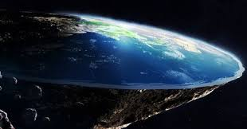

.
.
.
------------------------------------ 
.
--------------------------------- Debo aclarar que en el terraplanismo concurren multitud de tesituras que van desde las extremadamente racionales, hasta las -------------------------------------- rayanas en el fanatismo religioso en defensa de la postura bíblica, que ven el terraplanismo como la «oportunidad» en sus clásicas ------------------------------- «Guerras Santas de Conversión Masiva».
--------------------------------- Ideas y pruebas:
--------------------------------- A favor del terraplanismo:
--------------------------------- El horizonte siempre se ve plano lo mires desde donde lo mires, ya sea desde el espacio o desde la tierra.
--------------------------------- No solo se basa el terraplanismo en la observación experimental, sino en las múltiples referencias masónicas al respecto. El comportamiento de los ----------------------------------- reflejos solares y lunares, son un claro indicio de estar ante la presencia de una cúpula. El Sol, luna, estrellas fijas giran por encima de la tierra como ---------------------------------- las manecillas de un reloj.
--------------------------------- Algo fue pasó en la Antártida en 1947 que cambió el mundo y logró que se firmara el «Tratado Antártico» en 1959, que impidió de allí en más al resto --------------------------------- del mundo el libre acceso a esas tierras.
--------------------------------- Las cosas caen porque son más densas que el aire, y suben porque son menos densas que el aire, no existe la «magia» gravedad. Simplemente no ---------------------------------- puede existir una «fuerza» que no tiene forma de ser aplicada.
--------------------------------- El Polo Norte es el centro geográfico de la Tierra Plana y hacia él apuntan las agujas magnéticas. El Polor sur de la Tierra, literalmente no existe.
--------------------------------- Si la tierra estuviera en movimiento, variarían sus tiempos de vuelo en cada trayecto dado que irían a favor o en contra de la rotación terrestre.
.
--------------------------------- En contra del globalismo:
--------------------------------- El Big Bang no es posible porque no puede formarse nada a partir de una mera explosión.
--------------------------------- El Terraplanismo supone que la NASA es un fraude que jamás logró pasar la cúpula. Por ello supone que las misiones triupladas a la Luna, ---------------------------------------------- Estaciones espaciales y Sondas Interplanetarias son un fiasco. Niega también la existencia de los satélites, afirmando que las comunicaciones ------------------------------------------ terrestres son en un 95% por cables submarinos y el otro 5% por antenas repetidoras.
--------------------------------- La «objeción» de las mediciones de Erastóstenes sobre la curvatura de la Tierra, no tiene validéz, porque sus mediciones se cumplen por igual en ------------------------------------- los 2 modelos: tierra esférica o tierra plana. Si la Tierra fuera una esfera sería imposible contemplar según qué paisajes a más de 600 metros, por -------------------------------------- eso, aseguran que es plana, pues se pueden ver paisajes a más de 100 kilómetros de distancia.
--------------------------------- La Tierra es circular. Los barcos no desaparecen en el horizonte por la curvatura, sino por la perspectiva. El sol amaneciendo y al perderse en el ---------------------------------------- horizonte al final del dia se puede explicar por las leyes de la perspectiva. Lo mismo aplica para la Luna.
.
---------------------------------------------------------------------------------------------------------- Cliquea para volver al índice: Índice
.